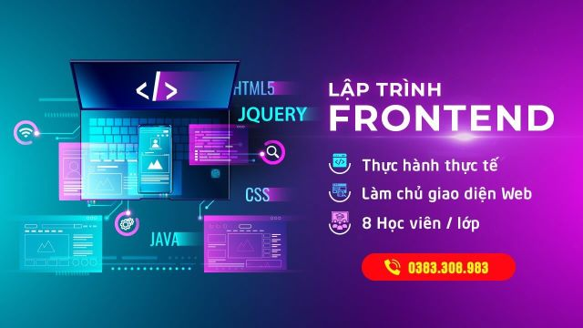

LẬP TRÌNH VIÊN FRONTEND

- Số buổi học Offline: 24 buổi
- Số giờ học Offline: 160 phút / 1 buổi
- Số giờ học Online qua video tặng kèm: 135 giờ
Giới thiệu
Khóa học lập trình Frontend phù hợp với các bạn muốn theo con đường lập trình web, cho dù bạn lựa chọn theo mảng Frontend hay Backend thì kiến thức trong khóa học này là điều bắt buộc bạn phải có. Sau khi tham gia khóa học sẽ có được nền tảng vững chắc về HTML CSS, Javascript, jQuery, Bootstrap, Flexbox, Responsive.
Đối tượng phù hợp tham gia chương trình học này
- Các bạn sinh viên muốn tiếp cận với ngành lập trình Web một cách bài bản.
- Các bạn muốn theo đuổi mảng Frontend hoặc Backend, đặc biệt là mảng Frontend
- Các bạn đang đi làm trái ngành, có hứng thú với lập trình và muốn học để chuyển ngành.
- Các bạn đã có kiến thức về Frontend (tự học, học qua trung tâm, khóa học online khác, ...) nhưng chưa vững, chưa có sản phẩm thực tế, cần thực hành, tiếp cận nhiều với dự án thực tế, muốn có sản phẩm riêng của chính mình
Hình thức học
- Kết hợp cả hai hình thức học Online và Offline.
- Học Online là hình thức được tặng kèm các khoá học online có liên quan với chương trình hiện tại trên hệ thống ZendVN. Học viên sẽ xem trước lý thuyết tại nhà thông qua video bài giảng quay sẵn trước khi tới lớp.
- Trong buổi Offline tại lớp sẽ ôn tập, đào sâu, và thực hành với các dự án kèm các tình huống thực tế để nâng cao và khắc sâu kiến thức. Tận dụng tối đa và hiệu quả thời gian học offline tại lớp cùng giảng viên
Các khóa học online tặng kèm
- Lập trình Frontend Master
- Sử dụng Flexbox trong xây dựng giao diện web
- Xây dựng giao diện web với SASS, GruntJS và Bootstrap
- Lập trình TypeScript